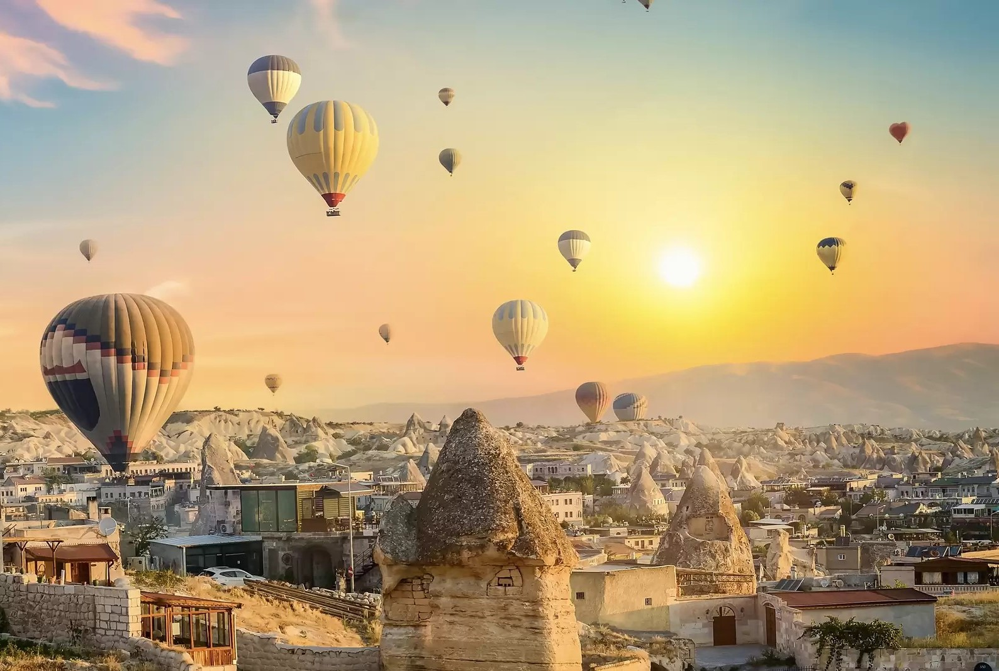
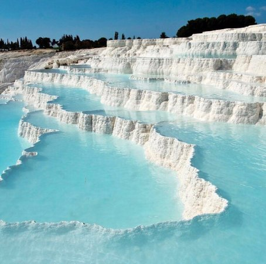

Recent Posts
Cappadocia
Cappadocia is a region located in central Anatolia, Turkey. It is known for its unique and striking landscape, which is characterized by its rocky terrain, underground cities, and hot air balloon rides.
Read MorePamukkale
Pamukkale, also known as Cotton Castle, is a natural site in southwestern Turkey that is known for its hot springs and the unique white terraces that have formed there. The terraces are made of travertine, a type of limestone that has been deposited by the hot springs.
Read More